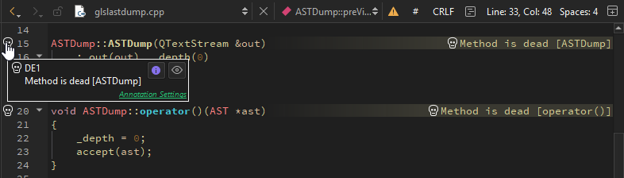
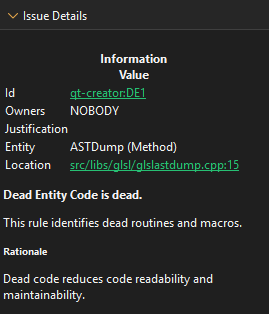
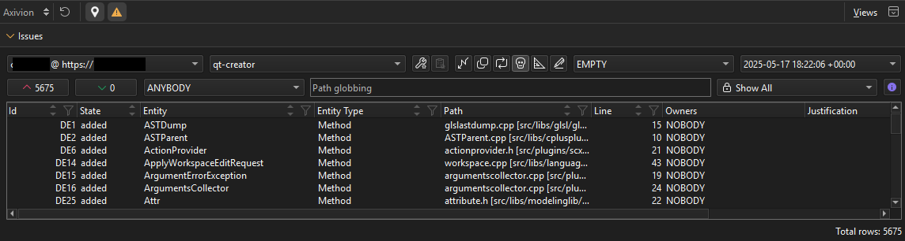

View Axivion static code analysis results
Connect to an Axivion dashboard server from Qt Creator to view results of code analysis.
Note: Enable the Axivion plugin to use it. To use the plugin, you must be connected to an Axivion dashboard server.
View inline annotations in editor
The editor shows found issues as inline annotations only if the project is configured with a path mapping. Hover over an annotation to bring up a tooltip with a short description of the issue.

Select to view detailed information about the issue in the Issue Details view.

To hide inline annotations, go to Analyze > Axivion and clear  .
.
View issues
To inspect issues found during the analyses:
- To go to the Axivion view:

- Go to Analyze > Axivion.
- In the mode selector, select Debug > Axivion.
- Switch to the Debug mode, and select Axivion in the debugger toolbar.
- Select a dashboard and a project.
- Select the icon of an issue type.
To refresh the list, select  .
.
To get help, select .
Issue types
Axivion looks for the following types of issues in the selected project:
| Icon | Type | Description |
|---|---|---|
| AV | Architecture violations, such as hidden dependencies. | |
| CL | Clones, such as duplicates and similar pieces of code. | |
| CY | Cyclic dependencies, such as call, component, and include cycles. | |
| DE | Dead entities are callable entities in the source code that cannot be reached from the entry points of the system under analysis. | |
| MV | Violations of metrics based on lines and tokens, nesting, cyclomatic complexity, control flow, and so on. | |
| SV | Style violations, such as deviations from the naming or coding conventions. |
Filter issues
To filter issues, select:
- The icon of an issue type.
- Two analyzed versions to compare. Select EMPTY to see issues from the version you select in the right-side version box.
 to see only added issues.
to see only added issues. to see only removed issues.
to see only removed issues.- The owner of the issue. Select ANYBODY to see all issues, NOBODY to see issues that are not associated with a user, or a user name to see issues owned by a particular user.
- Path patterns to show issues in the files in the directories that match the pattern.
Select  for a column to set or clear the filter expression for the column.
for a column to set or clear the filter expression for the column.
The information you see depends on the issue type. Select an issue to see more information about it in the Issue Details view. Double-click an issue to see the code that causes the issue inside the editor.
To show inline issues, select .
Jump to issues in the editor
Typically, the details for cycles and clones show several paths. To view the issues in the editor:
- Select a location column (that shows a file or line) to open the respective location (if it can be found).
- Select other columns to open the first link in the issue details. Usually, it leads to the Left location or Source location.
The easiest way to jump to the Right location is to select the link in the details or in the Right Path or Target Path column.
If there is no valid mapping configured for the current selected project you will be prompted to set up a valid path mapping as jumping to the issue relies on having a valid path mapping configured.
See also Axivion Preferences, Local Analysis, Enable and disable plugins, How To: Analyze, Analyzers, and Analyzing Code.